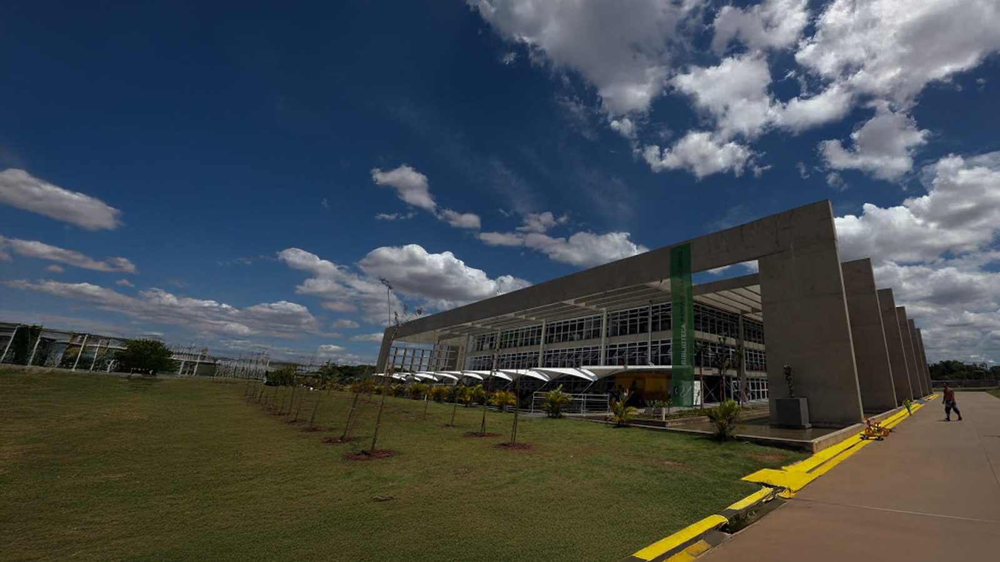
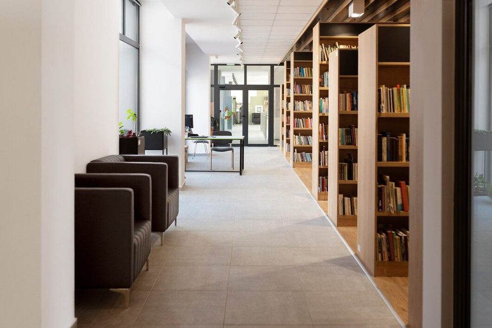
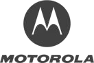
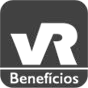
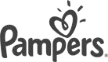
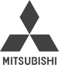
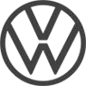

Biblioteca parque Villa-Lobos torna-se exemplo de revitalização do espaço urbano
O equipamento, que ocupa uma área de 4 mil m², é conectado com questões de sustentabilidade, além de oferecer espaços para lazer, trabalho e estudo. Atingiu recentemente a marca de 2 milhões de usuários atendidos.
saiba mais_quem somos
A SP Leituras é uma organização social especialista em gestão de projetos culturais ligados à leitura, linguagens e conhecimento.
O nosso trabalho é baseado na inclusão, diversidade, autonomia e sustentabilidade.
saiba mais_o que fazemos
Apoiada na ideia contemporânea de Biblioteca Viva, a SP Leituras atua com excelência nos seguintes eixos:
- gestão de equipamentos
- desenvolvimento de projetos
- formulação e execução de política públicas
- fomento à biblioteca viva
Especialista em gestão de projetos culturais ligados à leitura, linguagens e conhecimento.
-

O Sistema Estadual de Bibliotecas Públicas de São Paulo integra bibliotecas públicas municipais de São Paulo e trabalha em parceria com a SP Leituras.
ver página completa -
-
-
-
_100 melhores ONGs
Entre 2018 e 2021, fomos eleitos uma das 100 melhores ONGs do Brasil pelo Instituto Filantropia e Doar.
_melhor ONG da cultura
Em 2021, fomos premiados como a melhor ONG na categoria Cultura.
_direitos humanos e diversidade
Em 2023, recebemos o Selo Municipal de Direitos Humanos e Diversidade de São Paulo pela ação "Acolhimento na Biblioteca de São Paulo".
_inovação e impacto social
Também em 2023, ganhamos o Prêmio Seleção Mobile Time na categoria Inovação com Impacto Social/Ambiental pela BibliON.





_torne-
se um
patroci
nador
Visibilidade em materiais de divulgação, redes sociais e eventos, além de participação em cerimônias exclusivas e relatórios de impacto.
_entre em contato